SYSTEM.INIT()
NOT BAD: RECYCLING FAILURES
우리는 다시 시작할 용기를 위한 실패 공유 커뮤니티를 만든다.

THE
PERFECTION
TRAP
TARGET: 2535 자기계발러
SNS 속 타인의 성과와 자신을 비교하며 완벽주의의 덫에 빠진 이들을 위하여.
남의 성공을 보며 초라해질 때, 당신은 이미 충분히 애쓰고 있었습니다

RESILIENCE (회복탄력성)
실패의 파편을 다음 프로젝트의 밑거름으로 재활용.
HONESTY
잘 만든 척하는 위선을 거부하고 날것의 데이터를 공유.
RESURRECTION (유쾌한 부활)
실패는 새로운 시작을 위한 환승역.
"축하해! 드디어 새로운 걸 할 수 있겠네!"
SYSTEM PROCESS
01
LOG THE CRASH
Input failure data.
02
NETWORK
ANALYSIS
Community feedback loop.
03
EXTRACT & PIVOT
Deploy new iteration.